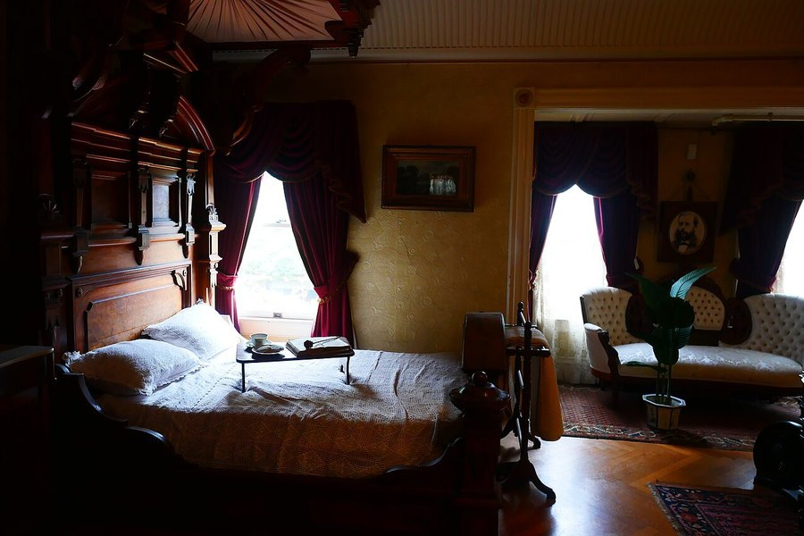

Morning Light Exposure and Cognitive Function: Why Early Sun Matters
Your brain's master clock resets every day, largely based on when light hits your eyes. Here's what that has to do with focus, memory and mood, and how much light you actually need.

Photo: Sgerbic / Wikimedia Commons / CC BY-SA 4.0
Key takeaways
- Morning light is the strongest cue your circadian clock uses to time sleep, hormone release and daytime alertness.
- Getting bright light within the first hour or two after waking is linked to easier sleep onset that night and steadier daytime energy.
- Circadian misalignment, from shift work, jet lag or simply staying indoors, is associated with worse attention and memory performance in population studies.
- Outdoor light is far brighter than typical indoor lighting, even on a cloudy day — that's the main reason going outside beats sitting near a window.
- Light therapy boxes can substitute for natural sunlight in winter, though they aren't a replacement for treating a diagnosed sleep or mood disorder.
- The research ties morning light most directly to sleep and alertness. The link to long-term memory is mostly inferred through better sleep, not tested on its own.
Short answer: getting bright light soon after you wake up helps set your circadian clock, and a well-set clock is linked to better sleep, steadier attention, and fewer of the foggy, unfocused mornings that come from a clock running out of sync with the actual time of day. The research is strongest for sleep timing and daytime alertness. The leap to "better memory" mostly runs through that same channel. Light helps you sleep on a consistent schedule, and consistent, sufficient sleep is what memory actually depends on.
How does morning light affect the brain in the first place?
Deep in the hypothalamus sits a small cluster of cells called the suprachiasmatic nucleus, often shortened to SCN. This is the body's master clock, and it takes its cues directly from the eyes through a set of light-sensitive retinal cells that respond most strongly to blue-leaning wavelengths, the kind found in daylight. When that signal arrives, the SCN adjusts the timing of melatonin release, core body temperature, and the morning rise in cortisol that helps you feel alert. Light in the morning nudges that whole system to run earlier and more consistently; light late at night can push it the other way.
What does the research actually link morning light to?
The most consistent findings involve sleep timing and subjective alertness. People who get bright light soon after waking tend to fall asleep more easily at a consistent hour that night, a pattern researchers call a circadian phase advance. Studies in shift workers and in people with seasonal mood changes have found that the timing of light exposure shapes both alertness and mood, though effect sizes vary a fair amount between studies and the research is still developing. It's a real, physiologically grounded effect. It just isn't a precise dial you can turn to a guaranteed result.
COMPLEX
The memory formula we rate highest in 2026
Getting outside each morning is free and it's foundational. Advanced Memory Complex pairs citicoline, bacopa and phosphatidylserine with core B-vitamins for the nutrient side once the basics, like light and sleep, are already in place.
See Today's Price →Does morning light actually improve memory, or just sleep?
Mostly just sleep, as far as direct evidence goes. Few, if any, trials have put people through a morning light routine and then tested their memory performance against a control group that same day. What does exist is a chain of separate, better-supported facts: morning light helps set a consistent circadian rhythm, and a stable, sufficient sleep schedule is one of the clearest, best-established supports for memory consolidation, a process we cover in more depth in our guide to how sleep and memory consolidation work. Chronic circadian misalignment, the kind seen in long-term shift workers or people who travel across time zones often, is associated with measurably worse attention and recall in population research. That's a different, longer-running pattern than whether one sunny morning sharpens today's memory test, and it's worth keeping those two claims separate.
How much light do you actually need, and does a cloudy day count?
As a rough rule of thumb, outdoor daylight, even under heavy cloud cover, is typically far brighter than the light inside most homes or offices, often by a wide margin. That's the real reason stepping outside works better than sitting near a sunny-looking window indoors. Most circadian researchers point to somewhere in the range of ten to thirty minutes outdoors, ideally within the first hour or two after waking, as a reasonable practical target. There's no single verified number that applies to everyone, so treat it as a useful starting habit rather than a precise prescription.
Who should be especially mindful of morning light?
Shift workers, people managing seasonal mood changes, older adults who spend most of the day indoors, and anyone recovering from jet lag tend to get the most practical benefit from paying attention to light timing. For people with limited outdoor access, especially in winter, light therapy boxes are a long-used and widely studied substitute, typically used for a set period each morning. They're a tool for circadian timing, though, not a treatment for a diagnosed sleep disorder or clinical depression, so talk to a doctor if that's what you're actually dealing with. If irregular hours are the root issue, our guide to how shift work affects memory goes deeper into that specific problem, and our piece on jet lag and memory covers the travel version of the same clock disruption.
Frequently asked questions
Does morning sunlight really improve focus?
It's linked to steadier daytime alertness and easier sleep onset that night, which indirectly supports focus. Getting bright light soon after waking is one of the more consistent circadian-health recommendations, though it's not a guaranteed fix for a bad night's sleep.
How soon after waking should I get light exposure?
Many circadian researchers suggest aiming for within the first hour or two after waking, since that's when light has the strongest effect on resetting the clock. Later light exposure still matters, just somewhat less for that reset.
Does it have to be sunlight, or does a lamp work?
Outdoor daylight, even under cloud cover, is typically much brighter than most indoor lighting, which is why stepping outside works better than sitting near a window. Light therapy boxes designed for this purpose can substitute when going outside isn't practical.
Can morning light actually improve memory?
Not directly, based on current research. The link runs through sleep: morning light helps set a consistent sleep-wake rhythm, and consistent, sufficient sleep is what memory consolidation actually depends on.
Want to support memory beyond your morning routine?
Light and sleep set the foundation. See the memory formulas our editors rate highest for 2026 for the nutrient side of the equation.
See the Top 5 Memory Formulas →Related: Sleep and memory consolidation · Jet lag and memory · How to improve your memory · Best memory formulas of 2026